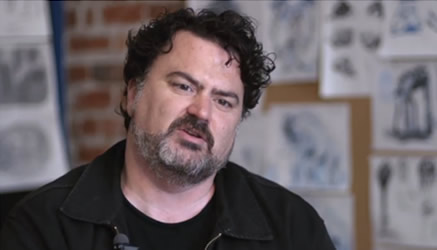

Changing Marketplace Realities
by
In 2004 LucasArts chose to not-publish an adventure game called Freelance Police. It seemed like a strange decision at the time, because the game was nearing completion and had already cost the company several million dollars to produce. Why would LucasArts write off that loss when they could release the game and try to claw something back?
The reason can be summed up by the famously depressing phrase “Marketplace Realities”. This is the only reason LucasArts ever gave, and even then it seemed like a weirdly passive-aggressive thing to say. It meant Adventure Games don’t make money. Nobody plays them. I looked at the sprawling fan community centred on Mixnmojo and thought: What about us? Doesn’t our money count?
The thing is, it wasn’t even about the game itself. Freelance Police was hugely significant to fans as a symbol – however good or bad the final product would be was irrelevant, because as long as it existed at all then there was hope. It was a statement from LucasArts that said “we are still in the adventure game business”, which meant more than any one game ever could. It was a statement of intent and of desire that called upon the wealth of heritage that we had all fallen in love with. To take that away wasn’t cancelling a game, it was cancelling the entire company – hell, the entire genre of adventure gaming.
We had been waiting for this moment to arrive for years, while all along kindling a stupid hope that it never would. That’s why I knew the Save Sam & Max petition would never change anything. We all knew it – but we signed it anyway, just to see, and by the end there were thirty-five thousand names on the thing. Needless to say, if every single one of them had sent LucasArts forty bucks, they would not have broken even on the game. It was just the last dying breath of optimism.
But then, eight years later, Tim Schafer decided to make a petition of his own. There was an interesting difference to it, like the Freelance Police scenario turned on its head: where before we signed up to try and save a game that already existed, here we would be paying to play a game that hadn’t even been made yet. He was proposing a change to the standard model of video game development, crowdfunded through Kickstarter. So, obviously, I was incredibly sceptical.
For about a second, anyway.
See, the thing was, I wasn’t online when the news broke. By the time I heard about it, it was already eight hours old. And it had already reached its funding target. In eight hours. Or, to put it another way, Tim Schafer had asked for some cash to make a game, and then received something like fifty thousand dollars per hour from a bunch of strangers. Clearly, Marketplace Realities had changed.
And now that the game has been funded, with a total of over three million dollars, Tim Schafer and Double Fine are in a unique position. They have, in equal part, freedom and responsibility. Under the standard model of video games, if you make a bad product it will review badly and sell badly. If you make a good product it will review well, and it might sell well. Here, under the Kickstarter model, the sales are irrelevant. Even if this is the worst game of all time, it will still break even. No studio will collapse, no employees made redundant. There is safety in this model.
But does that afford unlimited freedom? Where is the line between what the creator wants to create and what the fans feel they are owed? The last straight-up adventure game that Schafer made was in 1998, and was full of the classic trappings of the genre – dialogue trees, inventory puzzles, the abstract logic born of finite interactive choices. But adventure games have taken leaps into the unknown since then – it has been argued that games as diverse as LA Noire and Professor Layton are adventure games, and even the more traditionally styled Telltale fare has evolved into something bold and experimental in the Walking Dead series. So if Double Fine stray too far from the established path, is that okay? Or have people paid for an old style 2D SCUMM game?
As far as Schafer fans go, I’m pretty critical. I tend to think of his career as having two parts – the collaborative games, and the solo games. Of these I think the collaborations show far better game design, but the solo efforts tell the stronger stories – and there’s no real reason why that should be the case. Day of the Tentacle is arguably the most brilliant piece of game design within the confined structure of a 1990s adventure game, yet the lauded Grim Fandango includes several puzzles of such obscure difficulty that they’re genuinely hard to defend. In effect, the puzzles feel tacked-on to the story to make it more challenging, whereas everything you do in Monkey Island or Day of the Tentacle actually feels like it’s a part of the narrative and gives the puzzles a sense of context1. The nuances that started to appear in Full Throttle, and carried into later games – wider worlds, a greater sense of pace – are there in order to facilitate a narrative. People will complain that Throttle is too easy, and Fandango is too hard, but they’re strangely appropriate levels of difficulty – one is a game about a freewheeling biker, and the other about a guy who is stuck in limbo. These things feed into the experience on a subconscious level, more than anything. And the only thing anyone remembers about Grim Fandango is that the story is superb.
Is it possible for Tim Schafer to tell another great story like that, while at the same time fixing these minor mechanical hindrances that keep his games from mainstream success? Or will the financial security of the project inadvertently make the game less accessible – a love letter to his most hardened of fans, but nothing more?
What gives me optimism is that Schafer is an admitted fan of Amanita Design’s Machinarium. The game is a classic point and click, but it’s lean and stripped of unnecessary clutter – there are no verbs and no dialogue, yet it draws you into its world with its charming style, oozing atmosphere, involving you in a narrative that is quietly emotional and uniquely charming. It is in direct opposition to the verbose Grim Fandango, and just as excellent. It tells a powerful story without cutscenes and exposition, while still remaining – crucially – fun to play. It’s the evolution of LucasArts principles taken to the limit; the bare minimum required for it to be a challenging game and also a compelling narrative.
So perhaps the Double Fine adventure might rely less on traditional game story telling techniques, but not at the expense of the player. And I do think that there will be fewer compromises with this game than with previous Schafer titles – less publisher-related concessions to market research, a stronger emphasis on design quirks. All of those wild ideas that have come along over the years but have been thrown out due to the unyielding need for financial success. This might be a chance for a mass market adventure game that takes risks, and that hasn’t happened since Roberta Williams retired2.
If there’s one thing I’ve learned from adventure games it’s that setting doesn’t matter. A game about a dufus who wants to be a pirate is just as funny as a game about a genetically engineered tentacle, and a game about non-verbal robots can be as engrossing as an epic tale of crime and corruption in the land of the dead. I don’t care what the Double Fine Adventure is about. I don’t care if it’s funny, or straight, or somewhere in the middle. It just has to be good.
So when I think about it, maybe that’s the only responsibility Tim Schafer has right now. He has to make a game that can stand next to the titles he made at LucasArts. He has to make a LucasArts adventure game.
Isn’t that what we wanted all along? I guess this is just the first chance we’ve had to put our money where our mouths are.
1 There are notable exceptions to this, but ultimately the whole genre falls apart if you challenge the fundamental principal of: pick up every item and use it on everything until something happens. Sometimes the only context you need is that it’s an adventure game.
2 Some risks are just really, really stupid.